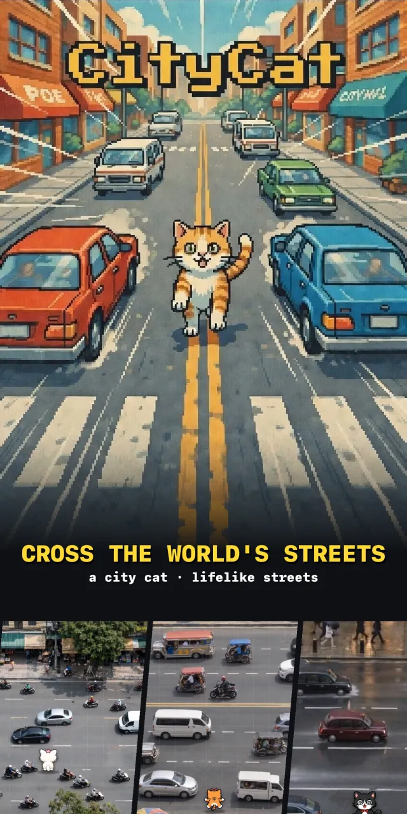
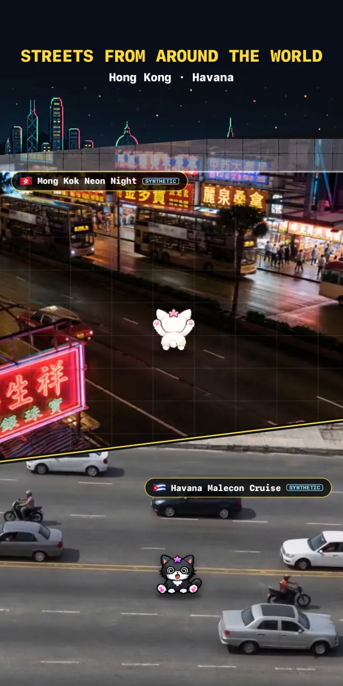
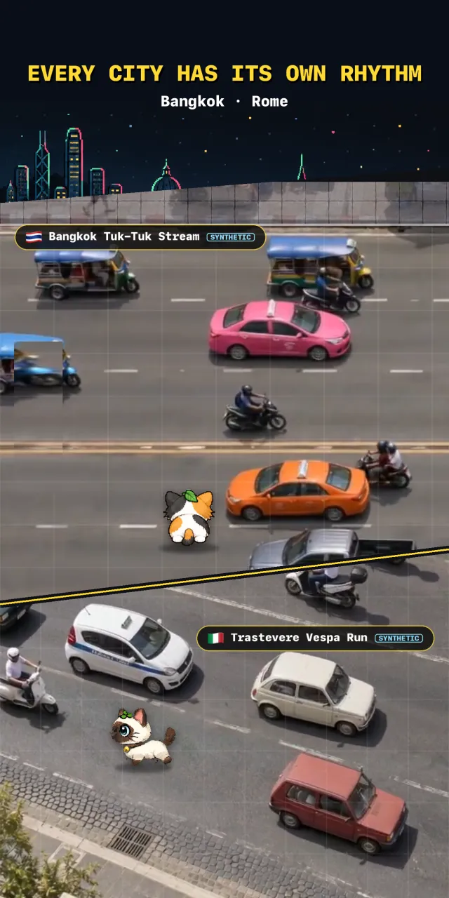
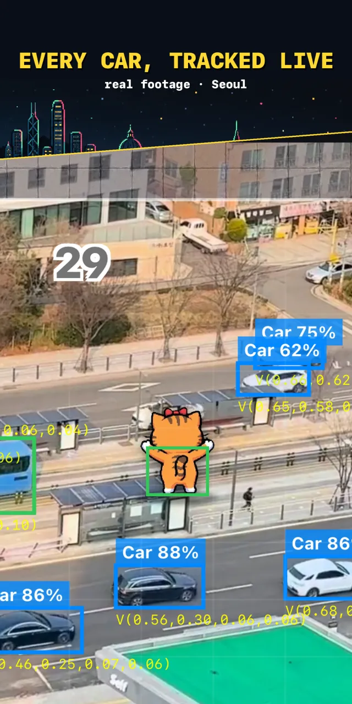
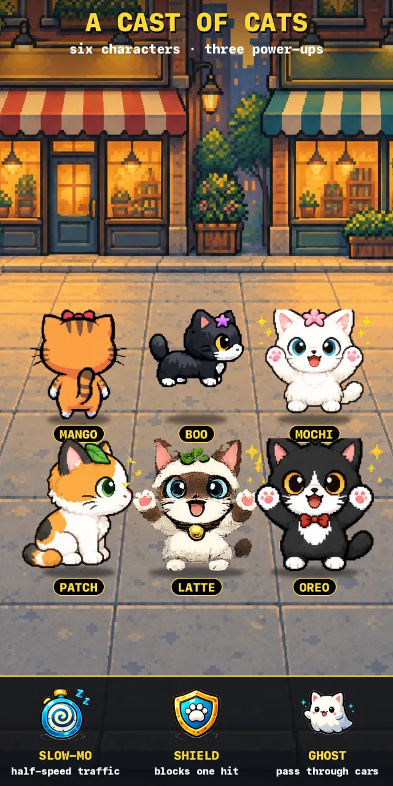

CROSS THE WORLD'S STREETS
Guide a pixel cat across busy streets from around the world. Every car is spotted by AI — time your dash through the traffic.
Free · In-app purchases · iPhone & Android





← swipe →
On-device AI finds every vehicle in the video. Each one is a hitbox — wait for the gap, then dash.
Real footage and AI-made city scenes, from Seoul to Havana. AI-made maps carry a SYNTHETIC tag. New streets land in the Map Market.
Point your camera at the street in front of you and play it. Always from a safe spot off the road.
Six cats and three power-ups — slow-mo, shield and ghost. Clear streets to earn coins.
Film your block from above and upload it as a map anyone can play.